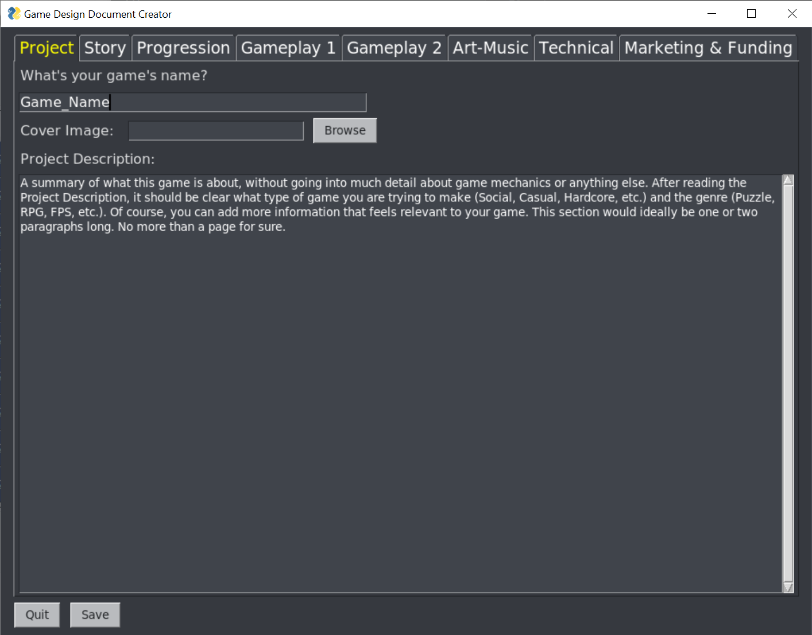

Revision: 1.0.0

A summary of what this game is about, without going into much detail about game mechanics or anything else. After reading the Project Description, it should be clear what type of game you are trying to make (Social, Casual, Hardcore, etc.) and the genre (Puzzle, RPG, FPS, etc.). Of course, you can add more information that feels relevant to your game. This section would ideally be one or two paragraphs long. No more than a page for sure.
“An important part of the art of storytelling is to create characters that the guests can empathize with easily, for the more the guests can empathize with the characters, the more interesting the events become that happen to those characters.” Jesse Schell, Book of Lenses
What hapens to the characters.
“Resonant themes elevate your work from craft to art. An artist is someone who takes you where you could never go alone, and theme is the vehicle for getting there.” - Jesse Schell, Book of Lenses
“The world of your game is a thing that exists apart. Your game is a doorway to this magic place that exists only in the imagination of your players” Jesse Schell, Book of Lenses
“The game begins with an idea.” - Jesse Schell, Book of Lenses
What can the characters do?
“There is an old rule of thumb that it takes six months to balance your game after you have a completely working version” Jesse Schell, Book of Lenses
“The world of your game is a thing that exists apart. Your game is a doorway to this magic place that exists only in the imagination of your players” Jesse Schell, Book of Lenses
“Music is the language of the soul, and as such, it speaks to players on a deep level.” Jesse Schell, Book of Lenses
“A plan is a real thing.” Jesse Schell, Book of Lenses